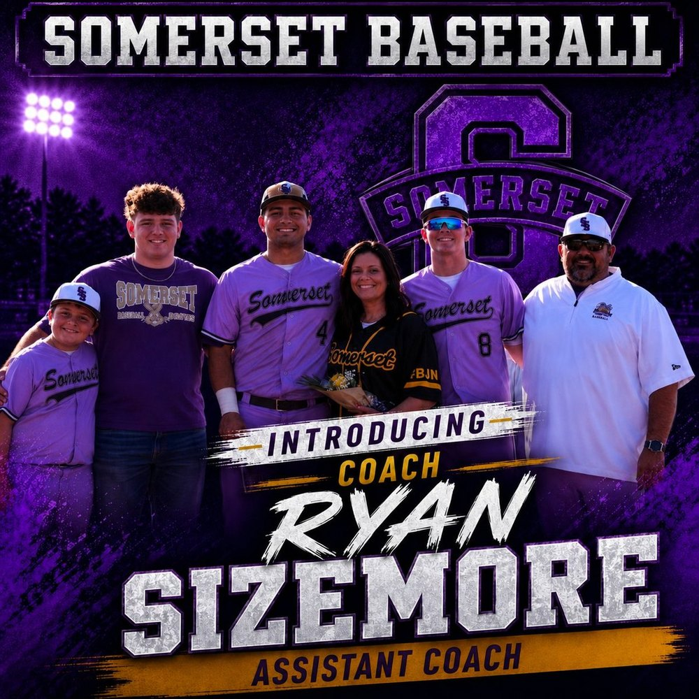
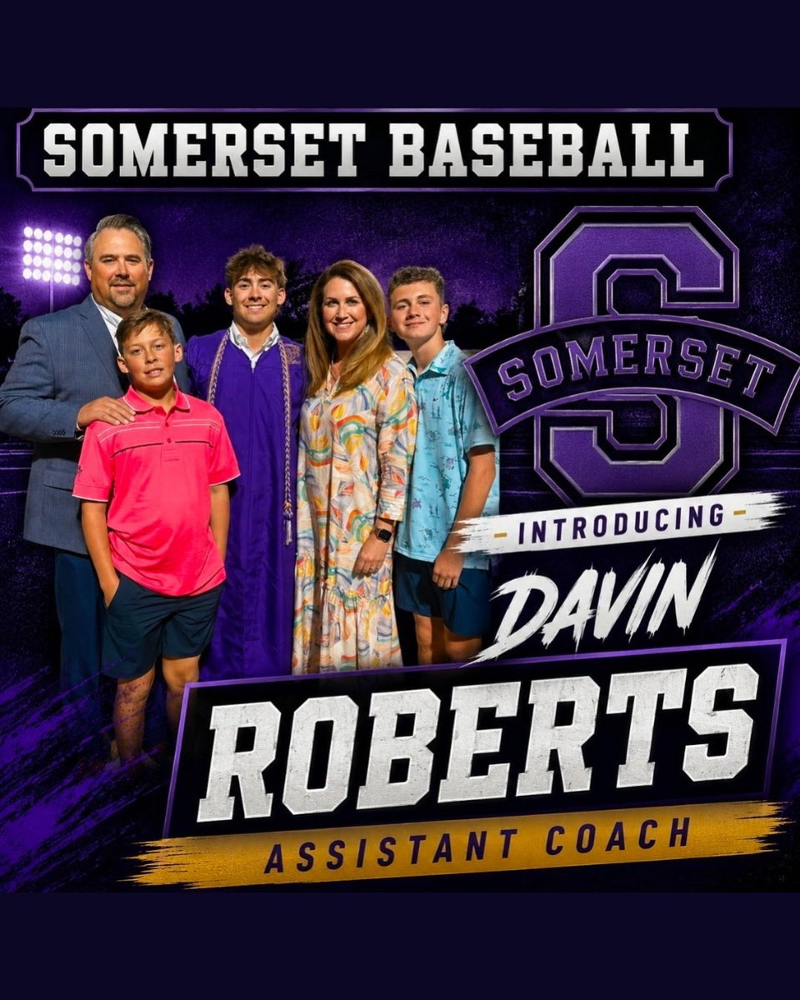
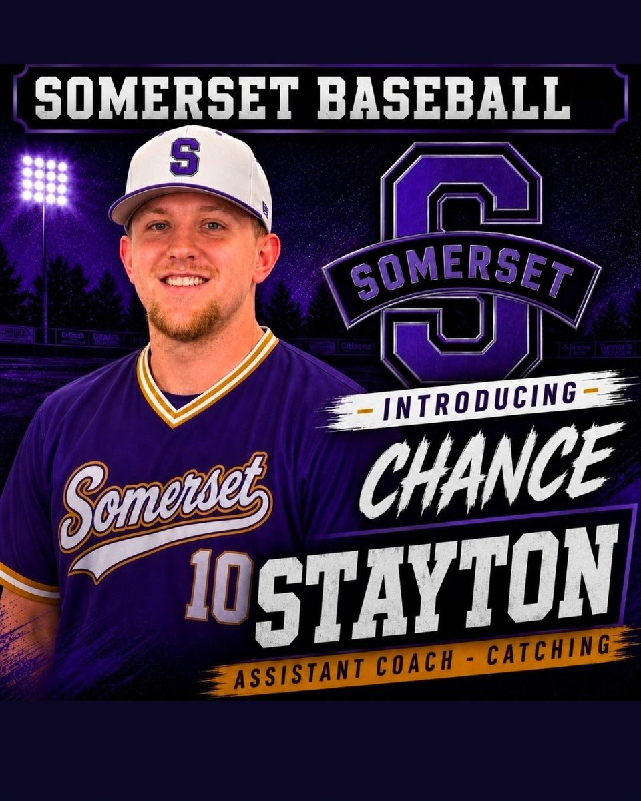
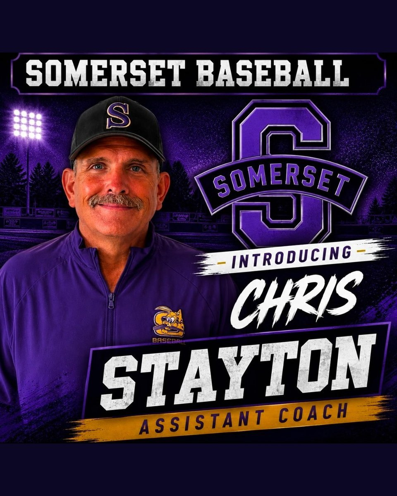

Jacob DenneyHead Coach
The staff
Five chairs on a ring. It turns on its own. Drag it. Click a card to lock the front. Announcement graphics until picture day.
Front of the ring




Drag the ring · hover pauses the spin
The cards
The line
Grundy is locked from the program graphic. Taylor is the field. Everyone between them lands when the years lock.